Designing Well-being at Scale: My Role in Elevating Thrive Global’s Core Experience
As the sole product designer focused on design systems at Thrive Global, I partnered with 7 cross-functional teams throughout the years to help shape an experience rooted in mindfulness, science, and behavior change. From reducing stress to building healthier habits, the Thrive app delivers key features that empower users every day:
While collaborating with two senior engineers, I also led the overhaul of the integrated design system used across Thrive’s core products. The system faced real challenges: inconsistent design patterns, outdated components, accessibility and localization gaps, and an overall lack of documentation that led to fragmented implementation.
I’ll walk you through the strategic approach I used to bring clarity, consistency, and scalability to the system—laying the foundation for a more seamless product experience.
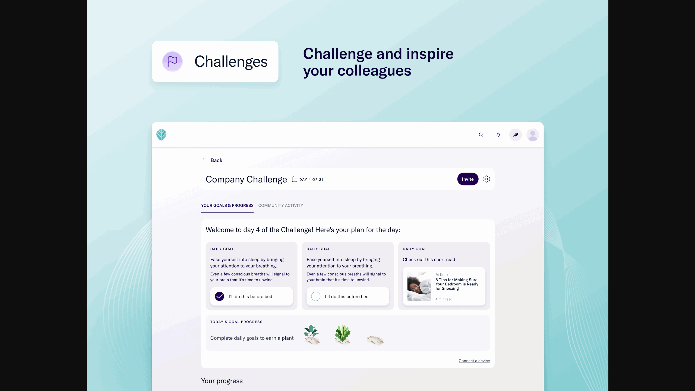
Building the Groundwork: Unifying Design Across Teams
When I first joined, the design landscape was fragmented—multiple products, inconsistent UI, and duplicated components. I led the effort to establish a foundational design system that aligned teams, streamlined workflows, and created visual consistency across the product suite.
Some of the results I’ve delivered:
Scaling the System: From Design Library to Cross-Platform Ecosystem
As the company grew, so did the complexity of our design needs. I helped evolve the system to support responsive web and mobile platforms, added robust documentation, and introduced new governance models to support scalability and adoption across multiple teams.
Designing for Everyone: Accessibility, Localization & Global Readiness
With a broader, more global user base, our design system had to do more than look good—it needed to be inclusive. I led accessibility improvements and adapted components to support multiple languages and cultural norms, ensuring our products worked for every user, everywhere.
Too many lego pieces
For the most part, every Lego piece connects to every other Lego piece. There is no silo of green pieces that refuse to connect with the blues. Yellow pieces aren’t busy trying to establish their own kingdom. Larger Lego pieces don’t take over meetings or require more attention. All Lego pieces work together toward a common and unified goal. While that seems like a good idea; being able to interchange and combine any Lego pieces, the output would not be ideal. It can be mismatched and oftentimes, it could be a messy process.
Here are the problems that were happening in our kingdom: low usage in reusable components, unclear guidelines within the documentation, and the majority of the components did not meet accessibility standards.
As the design systems lead, I owned the effort to lay a strong foundation that would improve collaboration, efficiency, and user experience across teams. This will help start building the right Lego set for Thrive.
Key responsibilities included:
When I joined the team, there was no single source of truth for our design language. The absence of a centralized design system led to a disjointed product experience and operational inefficiencies. Through an audit and cross-functional conversations, I identified 3 key issues:

1. Component Fragmentation Across Teams
Each product team built their own set of UI components over time; components like buttons, modals, inputs—all slightly different in spacing, behavior, or interaction. This led to a fragmented user experience and extra overhead for both design and engineering. Fixing a bug in one place of a component didn’t guarantee it was fixed elsewhere. Often times, it was not always under the hood change. It also made onboarding harder, since new team members had to navigate inconsistent patterns across the platform.
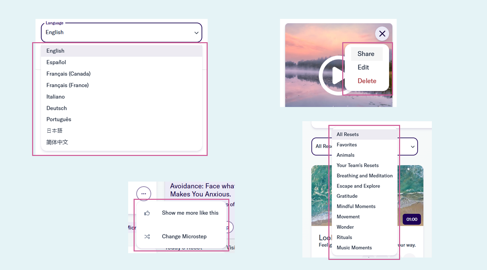
2. Inefficient Design-to-Development Workflow
Without a shared set of common components, designers were constantly recreating the same UI patterns from scratch (ex. buttons, cards, inputs—often with slight variations). Handoffs became messy since engineers had to interpret and rebuild designs manually, which led to inconsistencies and back-and-forth revisions. It slowed everyone down and made even simple features feel heavier to ship. A lot of time was wasted fixing things that could’ve been solved upfront with standardization.

3. Missing Accessibility Standards
A lot of the existing components didn’t follow basic accessibility standards. A few examples like proper color contrast, keyboard navigation, or semantic HTML were either missing or inconsistent. That meant every team had to solve for accessibility on their own, often overlooking key details or duplicating efforts. It also made it hard to scale inclusive design across the platform, since there was no reliable baseline to build from. We needed a more thoughtful, centralized approach to bake accessibility in from the start.
To address these issues, I led the creation of a foundational design system focused on scalability, usability, and accessibility. This included:
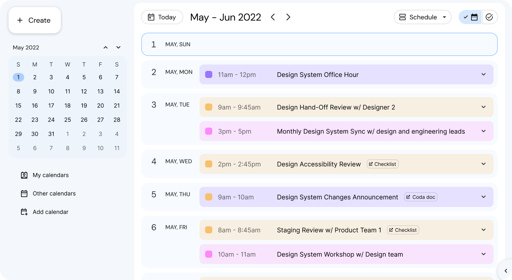
We set up a collaborative working model with design and engineering leads to make sure the system wasn’t just built in isolation. For example, we’d co-create components like tables or filters together, aligning early on technical constraints and design needs. We also ran pilots with a few product teams to gather feedback before rolling things out more broadly. This helped us catch edge cases early, make quick adjustments, and build trust. Over time, that collaboration turned into shared ownership, which made adoption smoother and more sustainable.

Most components are designed to meet AA-level accessibility standards outlined in WCAG 2.1 and 2.2. We regularly use Accessibility Insights to audit components for issues like insufficient color contrast, missing ARIA labels, or poor keyboard navigation. For example, we caught low contrast in secondary buttons and missing focus states in modals, which we quickly resolved. We also ensured icon-only buttons had proper aria-labels for screen readers. This ongoing accessibility review process helps us catch issues early and ship components that are usable for everyone.
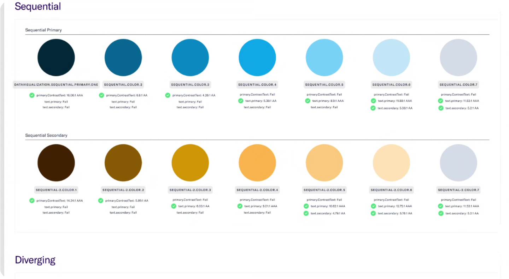
We built a shared design token architecture that kept Figma and the codebase in sync.UI elements like color, spacing, and typography were defined in one source of truth. For example, we mapped semantic tokens like button-primary-bg and text-muted directly from our design library to the front-end, which reduced handoff confusion and visual mismatches. When we updated a global spacing token, it reflected consistently across both platforms without manual overrides. This alignment made implementation faster and helped designers and engineers speak the same language. It also reduced drift over time and simplified onboarding for new team members.
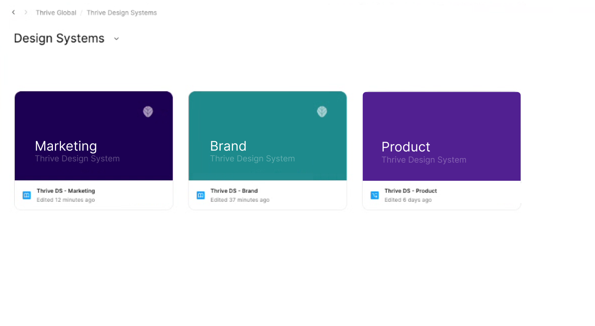
We built a centralized component library shared across teams, with clear specs, usage guidelines, and interaction patterns baked in. Since we support three design systems, we separated them into distinct libraries—each tailored to a specific product surface—so teams knew exactly where to go without second-guessing. This structure cut down confusion, reduced duplicate work, and made adoption much smoother. It also gave us more control when rolling out updates specific to each system.
This foundational work delivered tangible results across the organization:
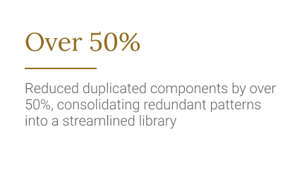
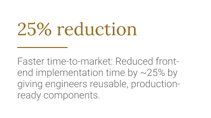
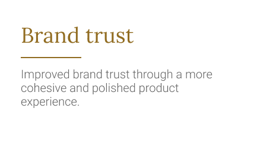
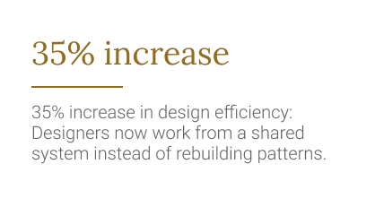
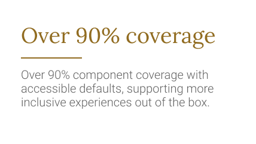
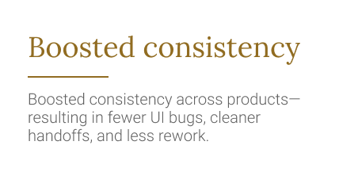
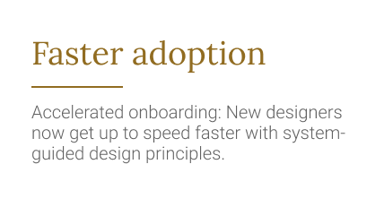
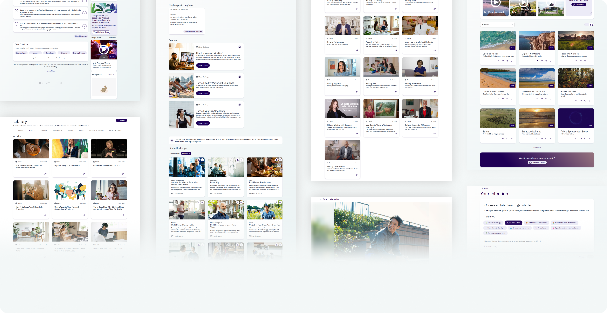
For me, this work wasn’t just about making things look consistent—it was about building the right blocks so the people creating the product could move faster and with less friction. Like snapping Legos into place, watching designers and engineers finally use the same pieces and speak the same visual language felt like a real win.
If I were to do it again, I’d push to get stakeholders aligned even earlier and be more intentional about tracking the system’s impact from day one. That said, getting this foundation in place was a huge unlock. It gave us the momentum to move faster, ship with more confidence, and focus on solving bigger product problems.
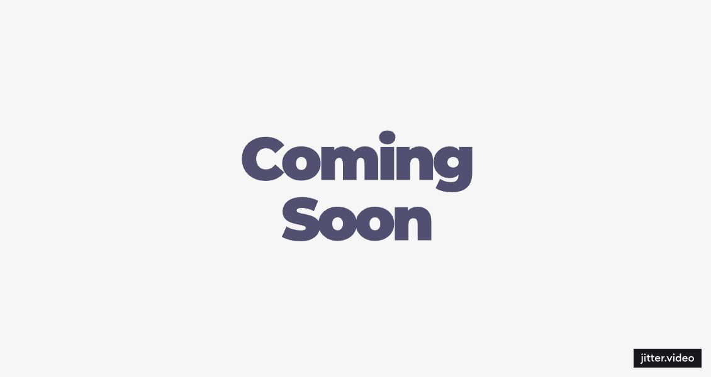